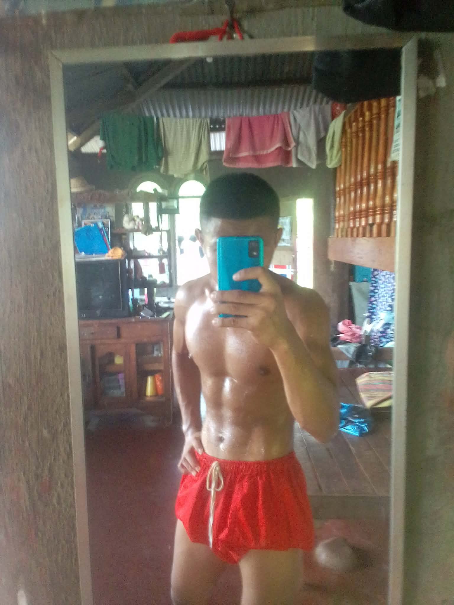
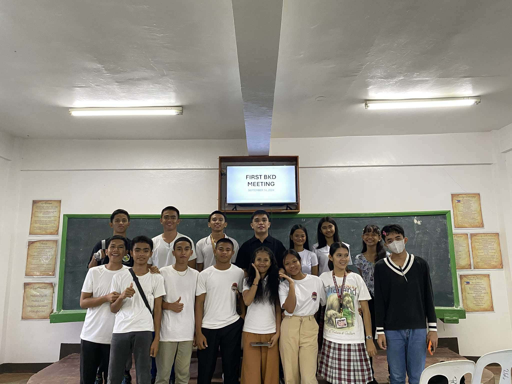
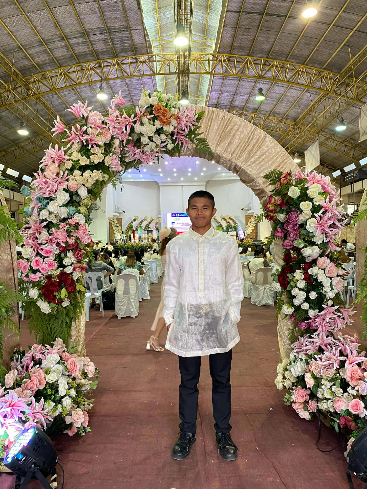

Gallery

.jpg)




A passionate student who loves technology, programming, and creativity.
Contact MeMy name is Manny I. Tagaan, and I am a 19-years-old, Male currently taking up Bachelor of Science in Information Technology (BSIT) at Agusan del Sur State University. I live in Brgy. Charito Bayugan City Agusan Del Sur. As an IT student, I have developed a strong interest in technology, especially in web development and programming. I enjoy learning how websites and systems are created, and I find it exciting whenever I discover new things about technology. During my free time, I like spending time on activities such as solving rubik's cube, if Im at our house I play guitar, and doing nothing. These activities help me relax and also inspire me to become more creative and productive. I am someone who is willing to learn, improve, and face challenges with determination. Although learning programming and technology can sometimes be difficult, I see every challenge as an opportunity to grow and gain more experience. I also value hard work, responsibility, and patience because I believe these qualities are important in achieving my goals. My dream is to become a successful IT professional someday and create useful projects or systems that can help people and make tasks easier. I know that success takes time and effort, so I continue to study, practice, and improve my skills step by step while working toward a better future.


